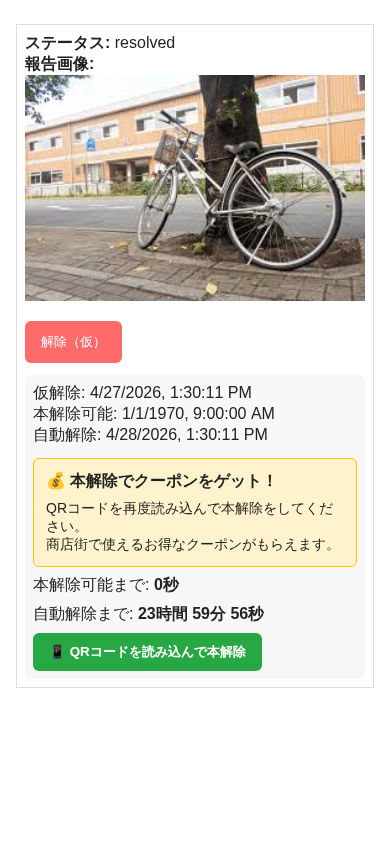
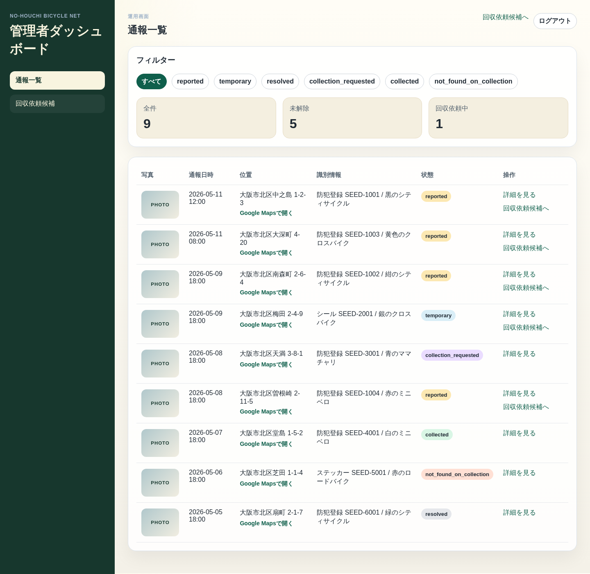

CIVIC TECH POSTER / EXHIBITION 2026
NO-Houchi Bicycle Net
放置自転車対策を、行政だけの後追い業務から 地域参加型の即時解決フローへ変える試作プロダクト。
Problem
現状の課題
歩行空間と景観を損なう
駅前や商業地で通行安全性が低下し、店舗前の営業環境や地域景観にも悪影響が出る。
行政の確認コストが重い
巡回、警告、回収依頼、結果記録が分断され、現地確認の空振りも発生しやすい。
持ち主を動かす導線が弱い
発見から状況把握までに時間差があり、持ち主の即時移動を促す仕組みが不足している。
Concept
解決の考え方
行政委託型の基盤
通報管理、回収依頼、結果記録を一元化し、運用の見える化と効率化を進める。
地域協賛型の動機付け
クーポンを「違法駐輪への報酬」ではなく、即時移動を促す期限付きトリガーとして使う。
解決までの流れを統合
発見から自己解決または回収完了までをひとつのフローとして扱い、対応履歴を残す。
Workflow
4ステップでつなぐ運用
試作品は「通報→持ち主解除」だけでなく、「未解除→回収依頼→結果記録」まで通します。
発見・通報
サポーターが Android アプリから写真・位置情報・識別情報を送信。
Actor: 住民 / サポーター警告・解除
持ち主が QR から Web へアクセスし、仮解除と本解除を実行。
Actor: 自転車の持ち主未解除案件の回収依頼
管理者が未解除案件を確認し、回収対象を業務フローへ乗せる。
Actor: 区役所 / 回収業者結果記録
回収完了または現地で現物なしを記録し、案件を状態管理する。
Actor: 管理者Prototype
試作品の構成
Supporter App
放置自転車の撮影、位置送信、識別情報付き通報。
Owner Web
QRからの警告確認、仮解除、本解除、期限付きクーポン導線。
Admin Dashboard
通報一覧、未解除案件確認、回収依頼、回収結果登録。
Backend API
全クライアントのデータを接続し、状態遷移と履歴を一元管理。
UI Snapshot
実際の操作イメージ


Value Loop
お金と価値の循環
住民・サポーター
通報参加で地域改善に関与し、ポイント要素の存在も示せる。
持ち主
警告を即時に把握し、撤去前に自発移動してクーポンを得られる。
地域店舗
クーポン提供で来店導線を作り、店舗前の放置減少も期待できる。
区役所・回収業者
回収対象の精度を上げ、巡回・撤去コストや空振りの削減につなげる。
Why This Matters
展示で伝えたいポイント
- 放置自転車対策を「取り締まり」ではなく「行動変容の設計」として見せる。
- 自己解決できる案件を増やし、行政の回収工数を後ろにずらさず前段で減らす。
- 通報から回収結果まで同一データで追えるため、運用の分断を減らせる。
- 試作品スコープを明確に保ちつつ、将来の地域連携や高度分析へ拡張可能。
今回の試作品は、通報・解除・回収依頼・結果記録までが対象。ブラックリストや高度分析、 外部連携は将来構想として切り分けている。